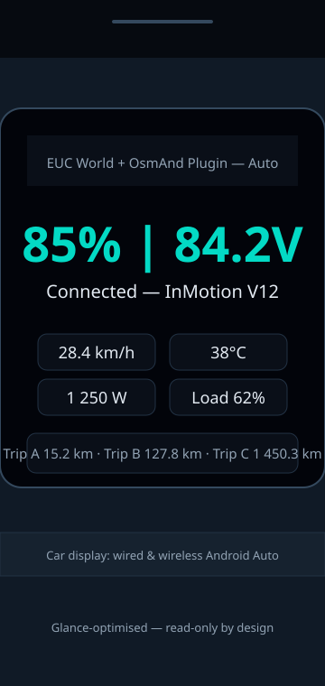

Designed for split-second glances
On a helmet HUD you look up for a fraction of a second while moving. The display is one dense, stable pane — battery and voltage first, then the trip line — with no menus to wander through mid-ride.
The read-only display was built primarily for the Motoeye E6 helmet HUD — its screen is projected over Android Auto, so the plugin appears in the HUD's launcher and shows a large, glance-safe summary of everything the wheel reports. The same pane works on any Android Auto head unit in the car.

On a helmet HUD you look up for a fraction of a second while moving. The display is one dense, stable pane — battery and voltage first, then the trip line — with no menus to wander through mid-ride.
Battery percentage, voltage and the three trip meter distances in the standard Android Auto rows, throttled to sane update intervals so the template doesn't flicker.
“InMotion V12 • Connected”-style title bar, so you know data is flowing with a single glance.
The same pane renders on any Android Auto head unit — wired or wireless — with compatible car display or Motoeye E6 projection.
Rider first: the pane is read-only by design — it displays the wheel, it never asks anything of the rider while moving. Trip resets are a deliberate tap, not incidental.